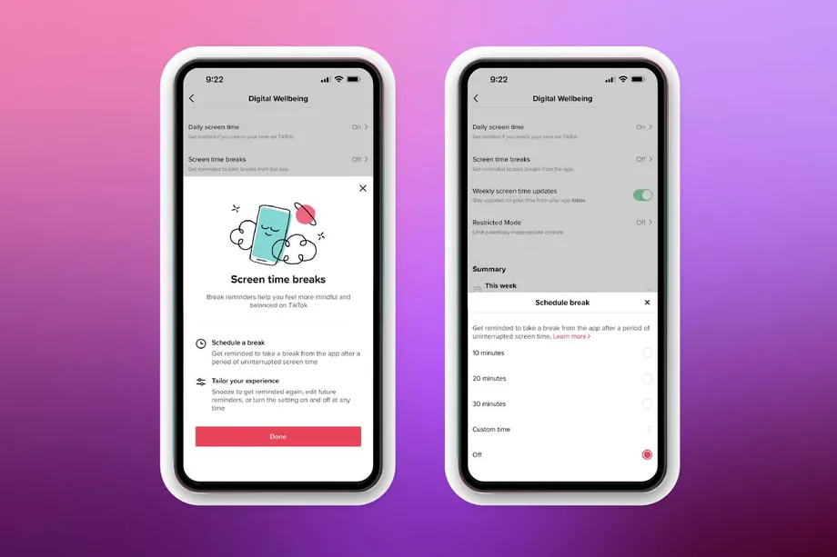
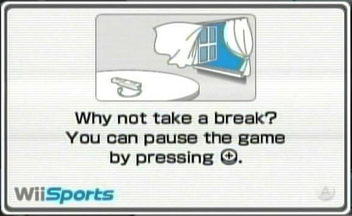
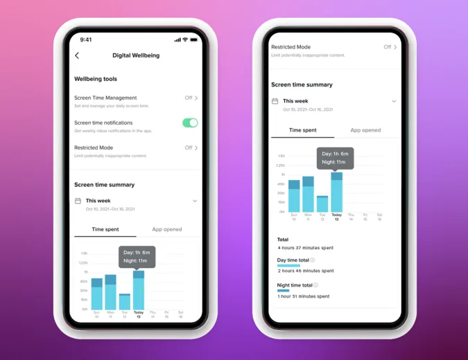
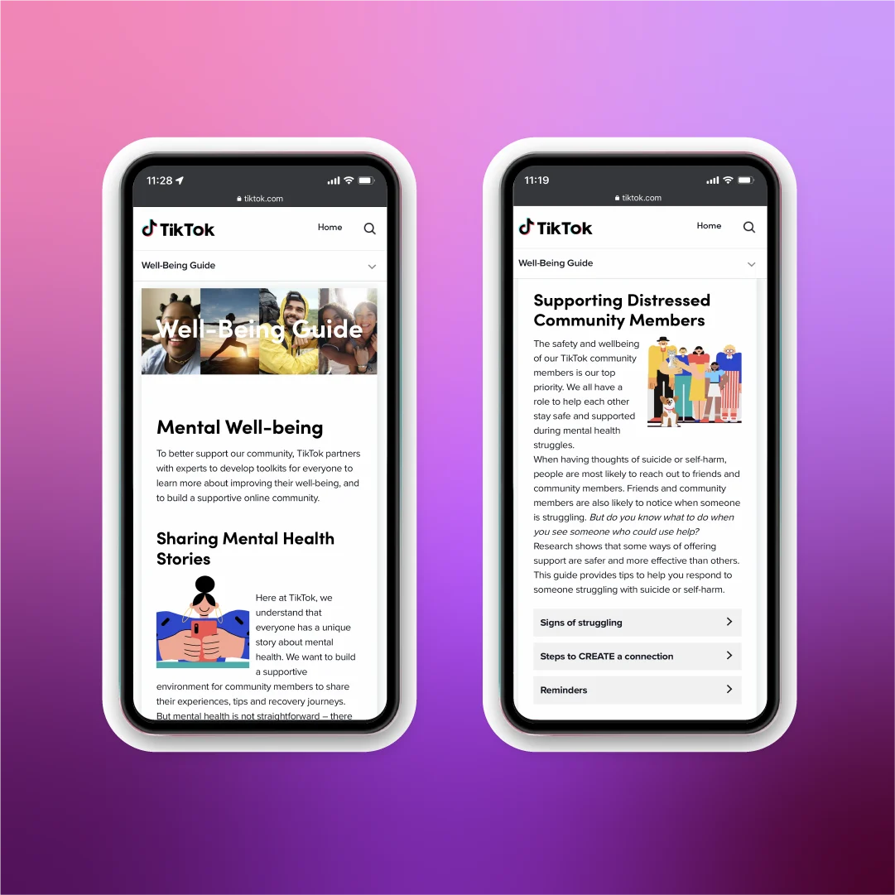

The CCP has realised TikTok has made people stupier than they thought!!

Business-wise, you want people to stay on your app and keep scrolling for as long as possible, but PR-wise TikTok also needs some sort of positive publicity!
TikTok
HEY PARENTS! WE'RE SAVING YOUR CHILDREN FROM ABSORBING ALL THE PROPOGANDA!!! YOU'RE WELCOME!!
TikTok would like parents to make a TikTok account for themselves so they can manage their child's TikTok account? Seems fine.
I'm guessing that parents do not care or even know about parental controls on anything! Let alone a social media app!

Although... the app seems to be enabling these wii-style 'take a break' prompts randomly.
Tiktok sent a screen time management on me and I dont know the password | by u/Uahstreet
About 2 weeks ago, I randomly got a screen time management restriction so I can only use tiktok for 1 hour before I need to put a password to keep using it. The thing is I never sent a screen time so I don't know the password. I'm the only that has access to my account so I know that no one else sent one.
This post shows a reddit user with no self control (BIG SURPRISE!) ...on r/ADHD...?
TikTok is a horrible use of my time so I (an adult) set up parental controls to lock the app and limit me to no more than 1 hour a day. | by u/996687320
If you're struggling with this too I suggest you do the same! As a 30 year old woman, I used to be able to lay in bed for HOURS and waste half the day scrolling TikTok. Now I'm limited to one hour per day. It's helped a lot!
On the iPhone:
Settings > screen time > app limits > add limit
Hope this helps you too.
Seems like a good step to combat your social media addiction, but you can just press the 15 minutes more button, as this commenter demonstrates.
dryroastedpeanutgal
I tried to put a time limit for tiktok, but I still found myself watching and pressing the “15 minutes more” a billion times.
so my boyfriend parental locked me and he's the only one that knows the code. now i'm limited to 30 min so i really like how i literally can't access it. i feel like a child but it works for me
I guess it works!!?
Ooooh but look at this post!!
Tiktok screen time limit turned on without me doing it? | u/[deleted]
Sorry, this post was deleted by the person who originally posted it.
NOOO! But anyways isn't it so nice that these mega corporations care about your digital wellbeing? =)

What is digital wellbeing anyway?
Seriously though thinking about it- spending hours scrolling is apps is super depressing.. the algorithm... too addicting, personally think algorithms are horrible in general.
What and what gets shown to you is completely random, or just influenced by the company, there's no winning... and also the people you follow are seen as less of a priority. There have been changes in many apps to promote more general public posts and content, instead of only those from people you care about. The ability to curate your own feed is diminishing. Which also corrolates to these services giving their users less control and customisability over time.

If your app has a Mental Well-being page- no- a Supporting Distressed Community Members page, there's something seriously wrong with the app.
But hey! Nothing will stop companies in their endless persuit of growing revenue and pleasing their shareholders!
TikTok (global version) is wildly different (in terms of what it shows on it's feed) to TikTok's Chinese version- Douyin's feed, maybe this is contributing to the mental health problems you say users on your platform have...
Douyin's facial recognition tech blocks foreigner from livestream | Taiwan News
TikTok's Chinese twin blocks foreigner within 1 minute of Chinese wife's livestream
Oh my god... racial facial recognition...
That's it, next time I'll be back when toddlers download TikTok onto their iPad and loose all potential brain functionality they could've developed!